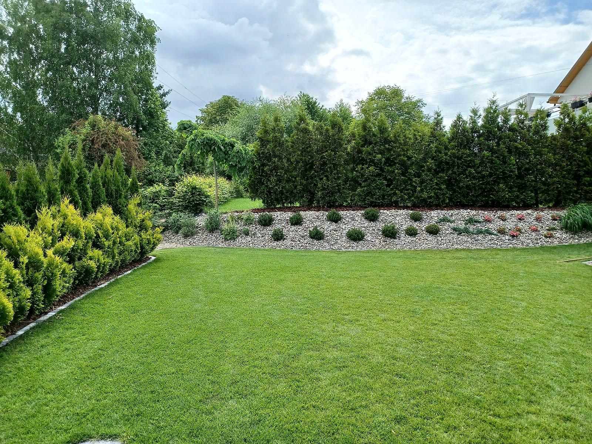
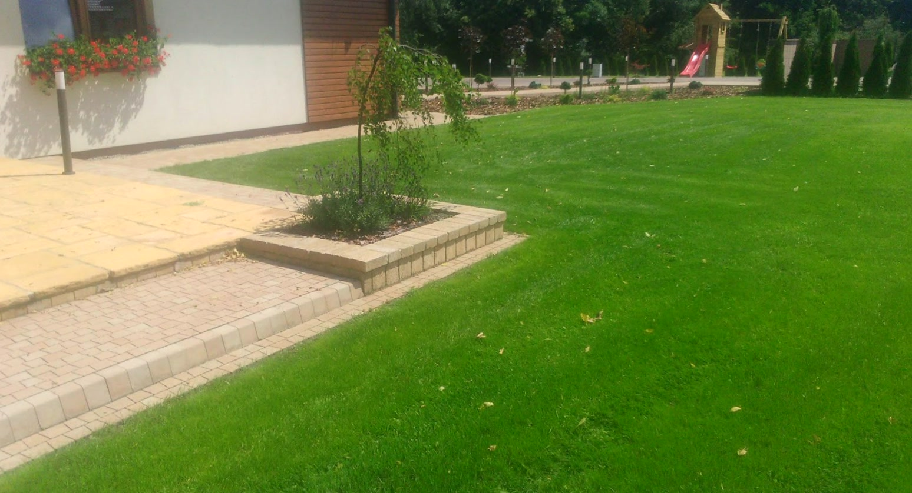
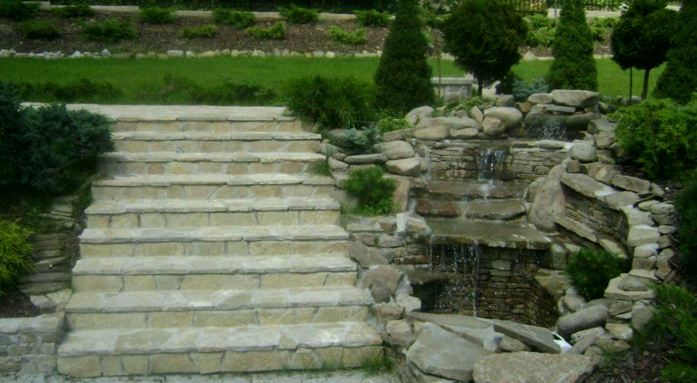
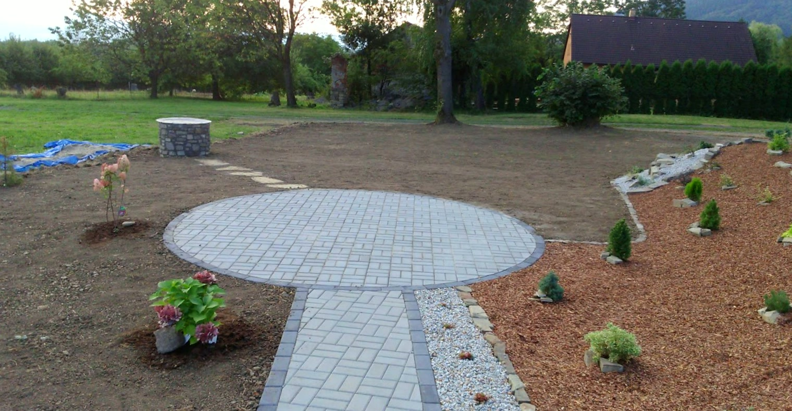
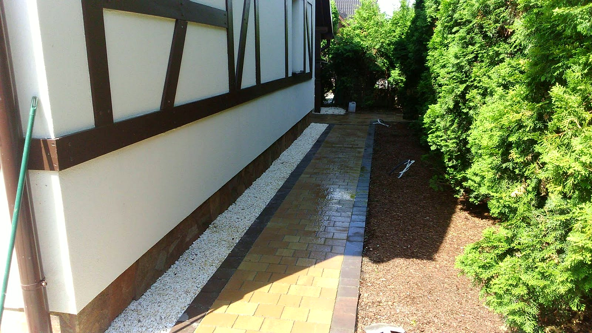
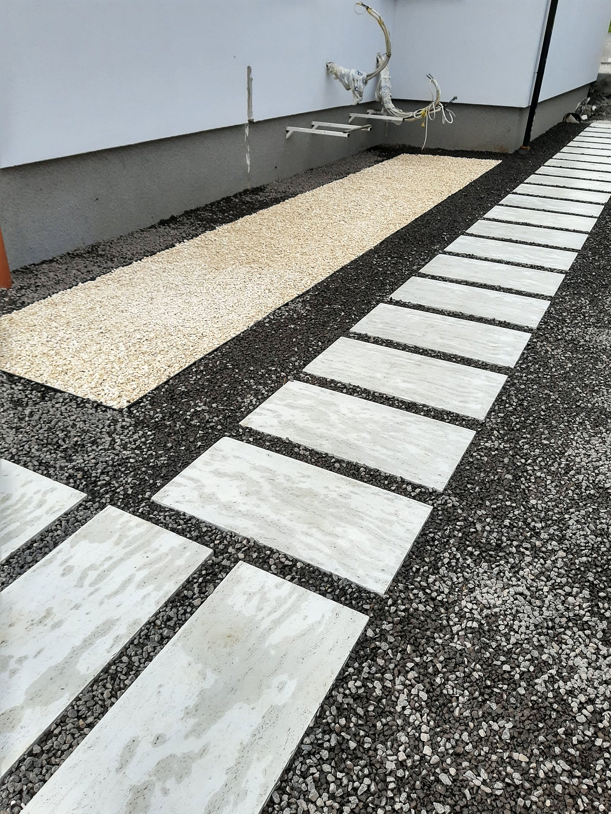

Od 26 lat układamy kostkę w Wiśle.
Ty pokazujesz teren i mówisz, co ma powstać. My mówimy, ile to kosztuje, kiedy wchodzimy i kiedy oddajemy gotowe.
Zadzwoń teraz +48 512 953 987- Bezpłatna wycena
- Dojazd: Wisła i okolice
- Gwarancja na robociznę
„Panowie wykonywali u mnie brukowanie.Pracują solidnie i sprawnie.”Barbara Bak
„Firma wybrukowała parking i zrobiła tarasy na skarpie w ogrodzie - rewelacja!”jan brzechwa
„Solidna firma , polecam”Wojciech Kubica
Wiesz, na czym stoisz - na każdym etapie
Od pierwszego telefonu do odbioru roboty - krok po kroku.
- 01
Dzwonisz
Telefon albo zdjęcia terenu. Po krótkiej rozmowie wiesz, czy to robota dla nas i kiedy możemy być na pomiarze.
- 02
Pomiar i wycena
Na miejscu mierzymy teren i sprawdzamy grunt. Dostajesz jedną cenę za całość: materiał, robotę i wywóz ziemi z koryta.
- 03
Robota
Koryto, podbudowa, obrzeża, kostka - etap po etapie. Każdą warstwę możesz obejrzeć, zanim przykryje ją następna.
- 04
Odbiór i gwarancja
Przechodzimy razem po całej nawierzchni. Coś Ci nie gra - poprawiamy, zanim rozliczymy robotę.
Z ostatnich robót
Każda z tych nawierzchni ma właściciela, który po niej codziennie jeździ albo chodzi. Bez dobierania kadrów i podkręcania kolorów.





Co robimy
To, po co dzwonią do nas najczęściej. Opis każdej usługi znajdziesz w ofercie.
- Podjazdy i dojazdyPodjazd codziennie trzyma auto, więc najwięcej pracy idzie w spód: koryto na właściwą głębokość, kruszywo zagęszczane warstwa po warstwie, podsypka i dopiero kostka - pod auto grubsza niż na ścieżkę.Wycena →
- Tarasy i ścieżkiKostka, płyty tarasowe czy granit - każdy materiał inaczej znosi słońce, mróz i mech.Wycena →
- Place i parkingiUtwardzamy place przy firmach, sklepach i halach - tam, gdzie codziennie wjeżdżają dostawy.Wycena →
- Palisady, obrzeża i schodyObrzeża i krawężniki to rama całej nawierzchni - osadzamy je na betonie, bo bez tego kostka z czasem rozchodzi się na boki.Wycena →
- Ogrody i trawnikiZakładamy trawniki, sadzimy żywopłoty, robimy rabaty i skalniaki z kamienia. Na życzenie projekt ogrodu i nawadnianie.Wycena →
- Podbudowa i korytowanieTo, czy nawierzchnia przetrwa, rozstrzyga się pod ziemią. Koryto na właściwą głębokość, geowłóknina tam, gdzie grunt słaby, kruszywo sypane warstwami - każdą przejeżdżamy zagęszczarką, zanim wjedzie następna.Wycena →
- Kamienne schody i oczka wodneSchody z naturalnego kamienia, murki i tarasy na skarpie, oczka wodne i kaskady.Wycena →
Co mówią klienci
Panowie wykonywali u mnie brukowanie.Pracują solidnie i sprawnie. Bardzo zgrana ekipa prowadzona przez sympatycznego szefa. Polecam.Barbara Bak
Firma wybrukowała parking i zrobiła tarasy na skarpie w ogrodzie - rewelacja! Polecam - wiedzą co robią.jan brzechwa
Solidna firma , polecamWojciech Kubica
Dojeżdżamy do Ciebie
Nie wiesz, czy dojedziemy do Ciebie? Zadzwoń i podaj adres. Jak nie dojeżdżamy, powiemy od razu i nie zajmiemy Ci dnia.
- Wisła
- + okolice
Dobrze wiedzieć
Ile kosztuje ułożenie kostki?
Zależy od terenu i materiału - inna cena wychodzi na piasku, inna tam, gdzie trzeba głębiej korytować i wywozić ziemię. Dlatego cenę podajemy dopiero po pomiarze - i w trakcie roboty ona już nie rośnie.
Czy wycena jest płatna?
Za pomiar i wycenę nie bierzemy pieniędzy. Płacisz za ułożoną nawierzchnię, nie za rozmowę o niej.
Kostka z materiałem czy sama robocizna?
Oba układy są w porządku. Z materiałem od nas masz jedną cenę i jednego odpowiedzialnego za całość; z powierzonym - najpierw go obejrzymy, bo nie każda kostka nadaje się pod auto.
Jak długo trwa taka robota?
Zależy od powierzchni i od tego, ile jest korytowania. Konkretny termin - od wejścia do odbioru - podajemy przy wycenie i tego się trzymamy. Ulewa potrafi przesunąć zagęszczanie o dzień; wtedy mówimy od razu, nie po fakcie.
Co z ziemią z koryta i starą nawierzchnią?
Starą nawierzchnię rozbieramy i wywozimy, a kostkę w dobrym stanie można odzyskać i ułożyć ponownie - to realna oszczędność na materiale. Co się da odzyskać, mówimy przy pomiarze.
Co, jeśli kostka się zapadnie?
Dobrze zagęszczona podbudowa nie siada - ale jak coś się ruszy, wracamy i poprawiamy. Nasza wina - robimy za darmo; wjechało tam coś dużo cięższego, niż ustalaliśmy - mówimy wprost, co i za ile.
Potrzebujesz fachowca? Wycenimy za darmo.
Zadzwoń lub napisz - przyjedziemy, obejrzymy i podamy jasną cenę. Bez zobowiązań.